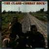
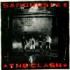
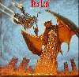
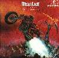
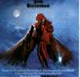
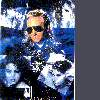
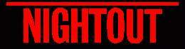
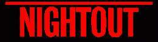

Ellen Foley detailed album info.
Related pages by other Web Authors
Dream Pollution (Jim Steinman),
Clash City Rocker,
Michael Garnett's page (Meat Loaf related),
Meat Loaf,
Meat Loaf,
punknet’s Ellen Foley


Ellen in her own right
- NIGHTOUT (album)
- The Spirit of Saint Louis (album)
- Another Breath (album)
- Beat Of A Broken Heart (B side)
- The Very Best Of Ellen Foley (album)
- About Time (album)
- Heaven Can Wait (single)


Ellen with Meatloaf
- Bat out of Hell
- Bat out of Hell II
- Braver Than We Are


Ellen as part of "Pandora's Box"
Other sightings/listenings"
- HAIR Original Movie Soundtrack (1979) (Black Boys)
- The Children Of The World (The Time Is Now)
- The Child In Me (Further And Further Away)
Any feedback to Me.
Go back to the start of Ellen Foley Information.
 
